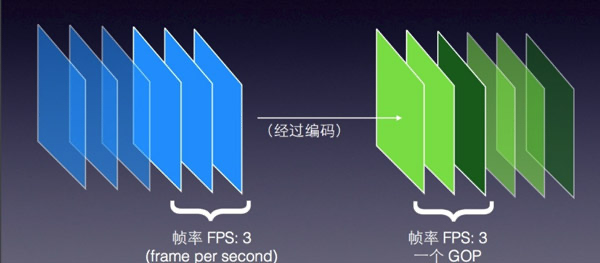
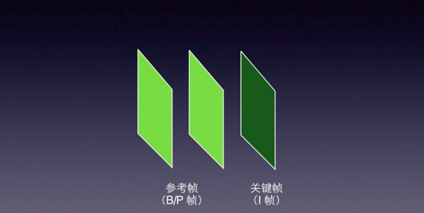
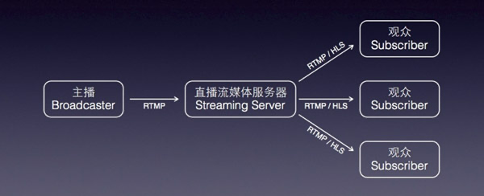
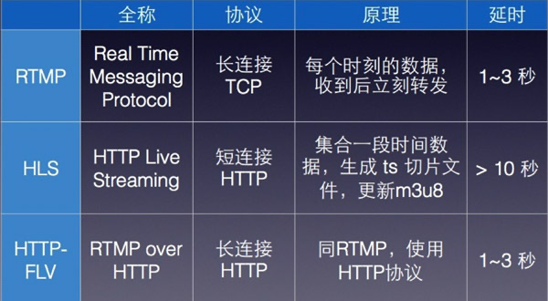
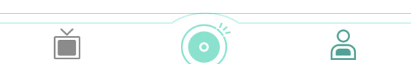

一、直播现状简介
1.技术实现层面
技术相对都比较成熟，设备也都支持硬编码。iOS还提供现成的Video ToolBox框架，可以对摄像头和流媒体数据结构进行处理，但Video ToolBox框架只兼容8.0以上版本，8.0以下就需要用x264的库软编了。
github 上有现成的开源实现，推流、美颜、水印、弹幕、点赞动画、滤镜、播放都有。技术其实不是很难，而且现在很多云厂商都提供SDK，七牛云、金山云、乐视云、 腾讯云、百度云、斗鱼直播伴侣推流端，功能几乎都是一样的，没啥亮点，不同的是整个直播平台服务差异和接入的简易性。后端现在 RTMP/HTTP-FLV 清一色，App挂个源站直接接入云厂商或CDN就OK。
2.直播优化层面
其实最难的难点是提高首播时间、服务质量即Qos（Quality of Service，服务质量），如何在丢包率20%的情况下还能保障稳定、流畅的直播体验，需要考虑以下方案：
1）为加快首播时间，收流服务器主动推送 GOP :（Group of Pictures:策略影响编码质量)所谓GOP，意思是画面组，一个GOP就是一组连续的画面至边缘节点，边缘节点缓存 GOP，播放端则可以快速加载，减少回源延迟

2）GOP 丢帧，为解决延时，为什么会有延时，网络抖动、网络拥塞导致的数据发送不出去，丢完之后所有的时间戳都要修改，切记，要不客户端就会卡一个 GOP的时间，是由于 PTS（Presentation Time Stamp，PTS主要用于度量解码后的视频帧什么时候被显示出来） 和 DTS 的原因，或者播放器修正 DTS 和 PTS 也行（推流端丢GOD更复杂，丢 p 帧之前的 i 帧会花屏）

3）纯音频丢帧，要解决音视频不同步的问题，要让视频的 delta增量到你丢掉音频的delta之后，再发音频，要不就会音视频不同步
4）源站主备切换和断线重连
5）根据TCP拥塞窗口做智能调度，当拥塞窗口过大说明节点服务质量不佳，需要切换节点和故障排查
6）增加上行、下行带宽探测接口，当带宽不满足时降低视频质量，即降低码率
7）定时获取最优的推流、拉流链路IP，尽可能保证提供最好的服务
8)监控必须要，监控各个节点的Qos状态，来做整个平台的资源配置优化和调度

9）如果产品从推流端、CDN、播放器都是自家的，保障 Qos 优势非常大
10）当直播量非常大时，要加入集群管理和调度，保障 Qos
11）播放端通过增加延时来减少网络抖动，通过快播来减少延时。
3.运营成本和客户体验
根据网上的数据，斗鱼 TV 为 3 亿人民币，战旗 TV 为 1.5 亿人民币，龙珠为 1.2 亿人民币，虎牙为 3000 万 + 人民币。
运营和推广：这个就比较烧钱了，一些做移动直播、游戏直播、秀场直播的A轮至少得上千万。
用户体验：流畅、不卡顿、不花屏、断线重连、丢包策略、首画加载速度、丰富的礼物系统，为了提高用户体验，可以在后台加载其他页面数据，但要在用户体验和内存优化方面找到平衡点。
二、流媒体传输
1.TCP：TCP为点对点的协议，虽然能保证了数据传输的可靠性，但是对服务器资源耗费较大，在数据流大的场合难以保证数据流传输的实时性。
2.UDP：UDP为不可靠传输协议，不需要维护连接状态，也不认为每个数据包都必须到达接受端，因此网络负荷比TCP小，传输速度也要比TCP快；但在网络越拥挤时，越有更多的数据包丢失。
3.RTMP：RTMP一个专门为高效传输视频，音频和数据而设计的协议。它通过建立一个二进制TCP连接或者连接HTTP隧道实现实时的视频和声音传输。
4.FFmpeg：FFmpeg是一套可以用来记录、转换数字音频、视频，并能将其转化为流的开源计算机程序。采用LGPL或GPL许可证。它提供了录制、转换以及流化音视频的完整解决方案

三、项目搭建：采集端
1.目前比较知名的有VideoCore
目 前国内很多知名的推流框架都是对VideoCore的二次开发。这个框架主要使用C++写的，支持RTMP推流，但对于iOS开发者来说有点晦涩难懂（精 通C++的除外）。想开源和免费的可以选择现在的几个知名项目VideoCore + GPUImage+基于GPU的美颜滤镜 ,播放用IJKPlayer自己修改。
2.国内比较火的LiveVideoCoreSDK
框架提供IOS苹果手机的RTMP推流填写RTMP服务地址，直接就可以进行推流，SDK下载后简单的工程配置后能直接运行，实现了美颜直播和滤镜功能，基于OpenGL，前后摄像头随时切换，提供RTMP连接状态的回调。
这 个框架是国内比较早的一款推流框架有不少在使用这个SDK，功能非常齐全，作者也比较牛，用来学习推流采集相关内容非常好，但是集成到工程中有些困难（对 于我来说）。总的来说这是一款非常厉害的推流SDK，几乎全部使用C++写的，编译效率非常好，如果有实力的话推荐使用这个框架来做自己项目的推流端。
3.可读性比较好的推流LFLiveKit
框架支持RTMP（Real Time Messaging Protocol ）：实时消息传输协议，Adobe公司的。
HlS (HTTP Live Streaming) ：苹果自家的动态码率自适应技术。主要用于PC和Apple终端的音视频服务。包括一个m3u(8)的索引文件，TS媒体分片文件和key加密串文件。
推荐这个框架第一是因为它主要使用OC写的，剩下的用C语言写的，框架文件十分清晰，这对不精通C++的初学者提供了很大的便利，并且拓展性非常强，支持动态切换码率功能，支持美颜功能。
4.美颜功能
美颜的话一般都是使用的GPUImage基于OpenGl开发，纯OC语言，这个框架十分强大，可以做出各种不同滤镜，可拓展性高。如果对美颜没有具体思路可以直接用BeautifyFace，可以加入到项目中，很方便的实现美颜效果。
四、项目具体搭建
1.如何实现美颜？
美颜功能使用的是BeautifyFace，它可以很快速的实现美颜功能，效果不错，它的底层还是基于的GPUImage，对GPUImage十分喜爱
的Developer，可以参照BeautifyFace，写出一个属于自己的美颜功能，并且添加各种滤镜。
2.悬浮TabBar的实现
这个TabBar看着像是用自定义TabBar做的，但事实上它还是用的系统的TabBar,给系统的tabBar.backgroundImage设置一张设计好的背景图片。
添加后会发现顶部有一条阴影线，并且TabBar的高度也不够。阴影线与上图绿色线条之间变成了透明颜色，实现下面方法隐藏阴影线，并且调高TabBar的高度。

//隐藏阴影线
[[UITabBar appearance] setShadowImage:[UIImage new]];
- (void)setupTabBarBackgroundImage {
UIImage *image = [UIImage imageNamed:@"tab_bg"];
CGFloat top = 40; //顶端盖高度
CGFloat bottom = 40 ; //底端盖高度
CGFloat left = 100; //左端盖宽度
CGFloat right = 100; //右端盖宽度
UIEdgeInsets insets = UIEdgeInsetsMake(top, left, bottom, right);
//指定为拉伸模式，伸缩后重新赋值
UIImage *TabBgImage = [image resizableImageWithCapInsets:insets resizingMode:UIImageResizingModeStretch];
self.tabBar.backgroundImage = TabBgImage;
[[UITabBar appearance] setShadowImage:[UIImage new]];
[[UITabBar appearance] setBackgroundImage:[[UIImage alloc]init]];
}
//自定义TabBar高度
- (void)viewWillLayoutSubviews {
CGRect tabFrame = self.tabBar.frame;
tabFrame.size.height = 60;
tabFrame.origin.y = self.view.frame.size.height - 60;
self.tabBar.frame = tabFrame;
}
3.播放端的实现
播 放端用的针对RTMP优化过的ijkplayer（），ijkplayer是基于FFmpeg的跨平台播放器，这个开源项目已经被多个 App 使用，其中映客、美拍和斗鱼使用了 ijkplayer（5700+?） 。在本文的末未提供了，已经打包好的ijkplayer，直接拖入项目就可以使用。省去了编译的过程（编译十分麻烦，并且容易出错）。播放端调用 ijkplayer参考VoideSun的简仿映客所写，如有关于ijkplayer的问题，可以请教这位大牛（VoiderSun）。
- (void)goPlaying {
//获取url
self.url = [NSURL URLWithString:_liveUrl];
_player = [[IJKFFMoviePlayerController alloc] initWithContentURL:self.url withOptions:nil];
UIView *playerview = [self.player view];
UIView *displayView = [[UIView alloc] initWithFrame:self.view.bounds];
self.PlayerView = displayView;
[self.view addSubview:self.PlayerView];
//自动调整自己的宽度和高度
playerview.frame = self.PlayerView.bounds;
playerview.autoresizingMask = UIViewAutoresizingFlexibleWidth | UIViewAutoresizingFlexibleHeight;
[self.PlayerView insertSubview:playerview atIndex:1];
[_player setScalingMode:IJKMPMovieScalingModeAspectFill];
}
4.推送端的实现
使 用的是LFLiveKit，推流端可以选择很多GitHub上的开源项目替代LFLiveKit，比如上面所提到的VideoCore,和 LiveVideoCoreSDK。商用的话可以选择各大厂商的SDK，网易直播云、七牛、腾讯、百度、新浪、其中金山直播云本人用过。使用直播云的好处 就是能快速上线App，功能十分齐全，可以播放器和推流端，服务器一套下来，有专业客服人员帮助集成到工程中，缺点就是流量费太贵了，具体可以了解下各大 厂商的收费标准。
- (UIButton*)startLiveButton{
if(!_startLiveButton){
_startLiveButton = [UIButton new];
//位置
_startLiveButton.frame = CGRectMake((XJScreenW - 200) * 0.5, XJScreenH - 100, 200, 40);
_startLiveButton.layer.cornerRadius = _startLiveButton.frame.size.height * 0.5;
[_startLiveButton setTitleColor:[UIColor blackColor] forState:UIControlStateNormal];
[_startLiveButton.titleLabel setFont:[UIFont systemFontOfSize:16]];
[_startLiveButton setTitle:@"开始直播" forState:UIControlStateNormal];
[_startLiveButton setBackgroundColor:[UIColor grayColor]];
_startLiveButton.exclusiveTouch = YES;
__weak typeof(self) _self = self;
[_startLiveButton addBlockForControlEvents:UIControlEventTouchUpInside block:^(id sender) {
_self.startLiveButton.selected = !_self.startLiveButton.selected;
if(_self.startLiveButton.selected){
[_self.startLiveButton setTitle:@"结束直播" forState:UIControlStateNormal];
LFLiveStreamInfo *stream = [LFLiveStreamInfo new];
stream.url = @"rtmp://daniulive.com:1935/live/stream238";
[_self.session startLive:stream];
}else{
[_self.startLiveButton setTitle:@"开始直播" forState:UIControlStateNormal];
[_self.session stopLive];
}
}];
}
return _startLiveButton;
}
stream.url是服务器的地址，推流完成后使用VLC播放。别人家的服务器，不建议推流时间过长（< 1分钟），建议搭建自己的RTMP服务器